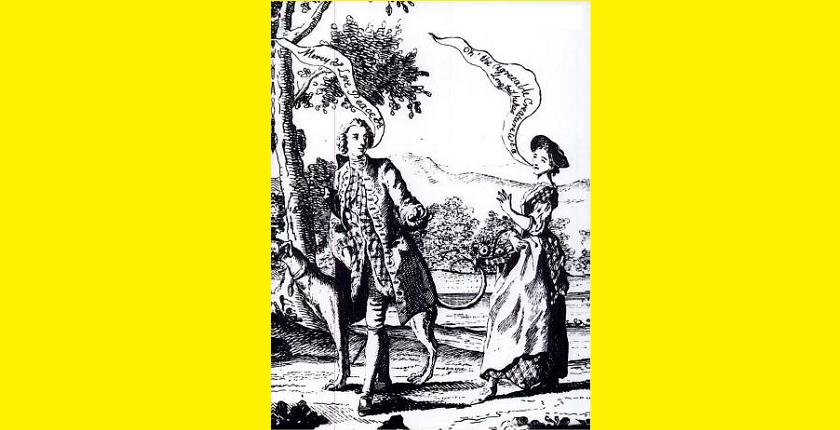

Theàrlaich Òig a' Chuailein Chiataich
Fhir ud thall an Achadh nan Comhaichean
Young Charles of mien so goodly - Jeune Charles à la noble prestance
Man from the Field of the Covenant - Homme du Champ du Covenant
Author unknown

"The Agreable Contrast", an engraving of 1747
Sequenced by Christian Souchon
Sources:
- Melody 1: CD "The Rise and Fall o' Charlie" by Alan Reid and Rob van Sante): see Links; Sound background to this page.
- Melody 2: as sung by Joan Wilson and recorded by Calum Iain Maclean, in September 1953, for the School of Scottish Studies collection; Track ID - 85505 . Permanent Link - http://www.tobarandualchais.co.uk/fullrecord/85505/1

|
Song To Prince Charles
(Lament) 1. Man from beyond Covenant's Field, I wish I never had come across your way You were travelling Glen Loy and Glendoe Both slopes of Lochiel and Glentadha Heelyerin O an na ho ro, Na heelyerin O an na ho ree, Na heelyerin O an na ho ro, Alas! your hopes the foe o'er threw. 2. I'd follow the late, I'd follow thee early, Follow through woods, and rocks and cairns; Thou art my dear one, thou art my darling, Thou art my choice of all in Alba. Heelyerin O an na ho ro, Na heelyerin O an na ho ree, Na heelyerin O an na ho ro, Alas! your hopes the foe o'er threw. 3. Youthful Charles, of mien so goodly, Love I gave thee, love enduring, Love to touch the deeps of despairing, I could wish I never had known you. Heelyerin O an na ho ro, Na heelyerin O an na ho ree, Na heelyerin O an na ho ro, Alas! your hopes the foe o'er threw. 4. Youth most noble, over whose shoulders Graceful locks in waves are flowing; Sweeter than softest cuckoo's cooing, Is the voice of their fond wooing. Heelyerin O an na ho ro, Na heelyerin O an na ho ree, Na heelyerin O an na ho ro, Alas! your hopes the foe o'er threw. 5. Your cheeks tasted like strawberry, And your lips like a wine from France, Your deep blue eyes enchanted me As did your overflowing locks. Hillirin O an na ho ro, 'S na hillirin O an na ho ri; Na hillirin O an na ho ro, Alas! your hopes the foe o'er threw. 6. Young Charles, son of King James I saw them pursuing you, at your heels They were so cheerful and I am so sad I am blinded by my tears. Heelyerin O an na ho ro, Na heelyerin O an na ho ree, Na heelyerin O an na ho ro, Alas! your hopes the foe o'er threw. 7. Slaughtered are brothers, slaughtered is father; Homestead is harried, and mother is ruined; Friends and kindred sadly bewailing; Still I could bear it if triumphed had Charlie. Heelyerin O an na ho ro, Na heelyerin O an na ho ree, Na heelyerin O an na ho ro, Alas! your hopes the foe o'er threw Translated by Charles Steward (late 1800s) |
Oran do Phriunnsa Tearlach
(na Achnacochan) 1. Fhir ud tha thail ma àiridh nan Comhaichean, B'fhearr leam t'hin gu'n cinneadh gnothach leat, Shiubhlainn Gleann-laoidh a's Gleann'-comhanleat Dà thaobh Loch-iall a's Gleann'-tadha leat, Hillirin O an na ho ro, 'S na hillirin O an na ho ri; Na hillirin O an na ho ro, Mo lean-dubh mòr o'n chaidh tu dhinn. 2. Shiubhlainn moch leat, shiubhlainn anamoch, Air feadh choilltean, chreagan 's gharbhlach; O! gur h-e mo rion an sealgair, 'S tu mo raghainn do shluagh Alba. Hillirin O an na ho ro, 'S na hillirin O an na ho ri; Na hillirin O an na ho ro, Mo leandubh mor o'n chaidh tu dhinn. 3. A Thearlaich oig a chuilein chiataich, Thug mi gaol dhuit 's cha ghaol bliadhna, Gaol nach tugainn do dhuicna dh' iarla, B'fhearr leam fhein nach fhac' mi riamh thu. Hillirin O an na ho ro, 'S na hillirin O an na ho ri; Na hillirin O an na ho ro, Mo leandubh mor o'n chaidh tu dhinn. 4. Fhleasgaich ud am beul a' ghlinne, Le t-fhalt dualach sois my d' shlinnean, B' annsa leam na chauch bu bhinne, 'Nuair dheanach tu rium do chomhradh milis. Hillirin O an na ho ro, 'S na hillirin O an na ho ri; Na hillirin O an na ho ro, Mo leandubh mor o'n chaidh tu dhinn. 5.Bha do phòg mar fhion na Frainge, Bha do ghruaidh mar bbraileig shàmhraidh, Sùil chorrach ghorm fo'd'mhala ghreannar, Do chul dualach, ruadh, a mheall mi. Hillirin O an na ho ro, 'S na hillirin O an na ho ri; Na hillirin O an na ho ro, Mo leandubh mor o'n chaidh tu dhinn. 6.A Thearlaich òig a mhic Righ Séumas, Chunna mi toir mhùr an deigh ort, ladsan gu subhach a's mise gu deurach, Uisge mo chinn tigh'n' tinn o'm lèirsinn. Hillirin O an na ho ro, 'S na hillirin O an na ho ri; Na hillirin O an na ho ro, Mo leandubh mor o'n chaidh tu dhinn. 7. Mharbh iad m' athair 's mo dha bhrathair; Mhill iad mo chinneadh 's chreach iad mo chairdean; Sgrois iad mo dhuthaich, ruisg iad mo mhathair; S' bu laoghaid mo mhulad nan cinneadh le Tearrlach. Hillirin O an na ho ro, 'S na hillirin O an na ho ri; Na hillirin O an na ho ro, Mo leandubh mor o'n chaidh tu dhinn. |
Chant pour le Prince Charles
(Complainte) 1. L'homme du Champ du Covenant, Pourquoi donc ai-je un jour croisé ta route? Tu parcourais le Glen Loy, le Glen Doe Les versants du Lochiel, Glentadh sans doute Heelyerin O an na ho ro, Na heelyerin O an na ho ree, Na heelyerin O an na ho ro, Toi parti, bien grande est ma détresse. 2. Par les bois, les rocs, les ravins, Marchant de l'aube jusqu'au crépuscule, Je mettais mes pas dans les tiens, Servant ta cause, Ecossaise crédule! Hillirin O an na ho ro, 'S na hillirin O an na ho ri; Na hillirin O an na ho ro, Toi parti, bien grande est ma détresse! 3. Tu ravis mon coeur plus d'un an, Charles Stuart à la noble prestance. Quel duc, quel comte en fit autant? Fallait-il que nous fassions connaissance? Hillirin O an na ho ro, 'S na hillirin O an na ho ri; Na hillirin O an na ho ro, Toi parti, bien grande est ma détresse! 4. O Jeune homme au verbe enjoleur Dont les ondulantes boucles débordent Sur l'épaule, tes mots charmeurs Aux plus ravissants chants d'oiseaux s'accordent. Hillirin O an na ho ro, 'S na hillirin O an na ho ri; Na hillirin O an na ho ro, Toi parti, bien grande est ma détresse! 5. Tes joues avaient le goût de baies, Et tes lèvres celui d'un vin de France, Ton oeil bleu profond me charmait Et tes boucles dorées en abondance. Hillirin O an na ho ro, 'S na hillirin O an na ho ri; Na hillirin O an na ho ro, Toi parti, bien grande est ma détresse! 6. O Charles, fils de Jacques le Roi J'ai vu toute leur armée à tes trousses. Eux ils riaient, tandis que moi, A travers mes larmes, n'y voyais goutte. Hillirin O an na ho ro, 'S na hillirin O an na ho ri; Na hillirin O an na ho ro, Toi parti, bien grande est ma détresse! 7. Mon père, mon frère ont péri, Ma mère et moi n'avons plus que nos larmes. Le deuil eût fait place à l'oubli Pourtant, avec le succès de tes armes. Hillirin O an na ho ro, 'S na hillirin O an na ho ri; Na hillirin O an na ho ro, Toi parti, bien grande est ma détresse! Traduction Christian Souchon (c) 2009 |
|
Note.— "The real author of this favourite ditty is not
known, and though published on the " lips of thousand fair
maidens and fond admirers," this is the first time it has
been committed to press. Various MS. copies of it are
in our possession, the oldest of which is by a Lady and
bears the following title. " Miss Flora Macdonald's Lament for Prince Charles."
[However the placenames mentioned rather point to the "Glenn Mor" where Loch Ness and Loch Lochy line up, as well as to the "Lochaber" area, around Fort William than to Benbecula Island, Flora's homeland] Source: "SAR-OBAIR NAM BARD GAELACH", (The beauties of Gaelic poetry) by John McKenzie, Glasgow 1841. |
Note. "Le véritable auteur de cette chanson fameuse n'est pas connu et bien qu'on l'entende sur les lèvres de milliers de "jeunes et jolies admiratices", c'est la première fois qu'il est imprimé. Plusieurs copies de manuscrits sont en notre possession, dont le plus ancien est de la main d'une dame qui lui a donné le titre "Lamentation de Flora McDonald pour le Prince Charles".
[Cependant les noms géographiques mentionnés évoquent le "Glenn Mor" où s'alignent le Loch Ness et le Loch Lochy et le "Lochaber", la région de Fort William, plutôt que l'Île de Benbecula, le pays de Flora.] Source: "SAR-OBAIR NAM BARD GAELACH", (Chefs d'oeuvre de la poésie gaélique) by John McKenzie, Glasgow 1841. |
Moidart, Glenfinnan, Edinburgh, Flora and Charlie
in the 1948 film "Bonnie Prince Charlie"
Director, Anthony Kimmins (1901 - 1964)
Starring David Niven and Margaret Leighton.
Some scenes are apparently inspired from Jacobite songs: Burn's "Charlie is my Darling", Hogg's "Flora's Lament" and by the portrait above.
Curiously, the sound background to this video clip is the traditonal Irish song "Bonny Portmore" sung by Loreena McKennit